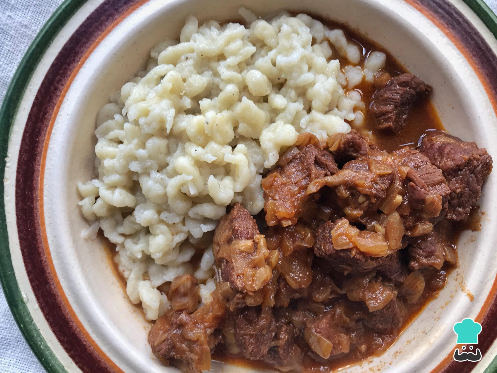

Goulash with Spaetzel

Description
This meaty goulash recipe is easy to make on the stovetop but can also be done in a slow cooker. Inspired by Paula Deen's Bobby's Goulash.
This easy goulash recipe is quick, easy, and wonderfully satisfying.
Ingredients
- Onion and Oil
- Beef
- Tomato
- Spaetzel
- Paprika
- Water
Instructions
- Cook the onion in oil, then add the ground beef and cook until brown. Add garlic.
- Stir in the water, tomatoes, and seasonings. Bring to a simmer.
- Stir in uncooked noodles, cover, and simmer until pasta is tender.